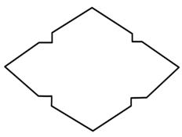
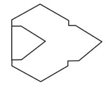
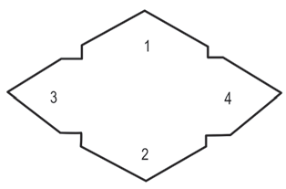

5. Kunjua na nyoosha mifuko au bahasha vizuri;
6. Tandaza na acha kwa muda hadi zikauke; na
7. Nyoosha kwa pasi yenye joto la wastani baada ya kukauka. Hii itatumika kama ramani ya kutengenezea kigezo cha bahasha. Kielelezo namba 3 kinaonesha kigezo cha kutengeneza bahasha kikiwa kimenyoshwa na kikiwa kimekunjwa;


Kielelezo namba 3: Mfano wa kigezo cha kutengeneza bahasha
8. Laza ramani hiyo kwenye karatasi ngumu kiasi;
9. Shikiza ramani hiyo katika karatasi ngumu kwa pini au kibanio;
10. Tumia rula na penseli kupiga mistari kufuata kingo za ramani hiyo;
11. Ondoa pini au vibanio kisha tenganisha ramani na karatasi ngumu;
12. Kata karatasi kwa kisu au mkasi au wembe. Baada ya hatua hizi, kigezo cha bahasha au mfuko kipo tayari kama kinavyoonekana kwenye Kielelezo namba 4;

Kielelezo namba 4: Kigezo cha bahasha chenye pande nne
13. Kunja upande namba 3 kuelekea ndani. Ukunje kwa kufuata mstari ulionyooka kati ya kona za upande huo;
14. Kunja upande namba 4 vivyo hivyo. Pande namba 3 na 4 zitakuwa zimelaliana kama zinavyoonekana kwenye Kielelezo namba 5;